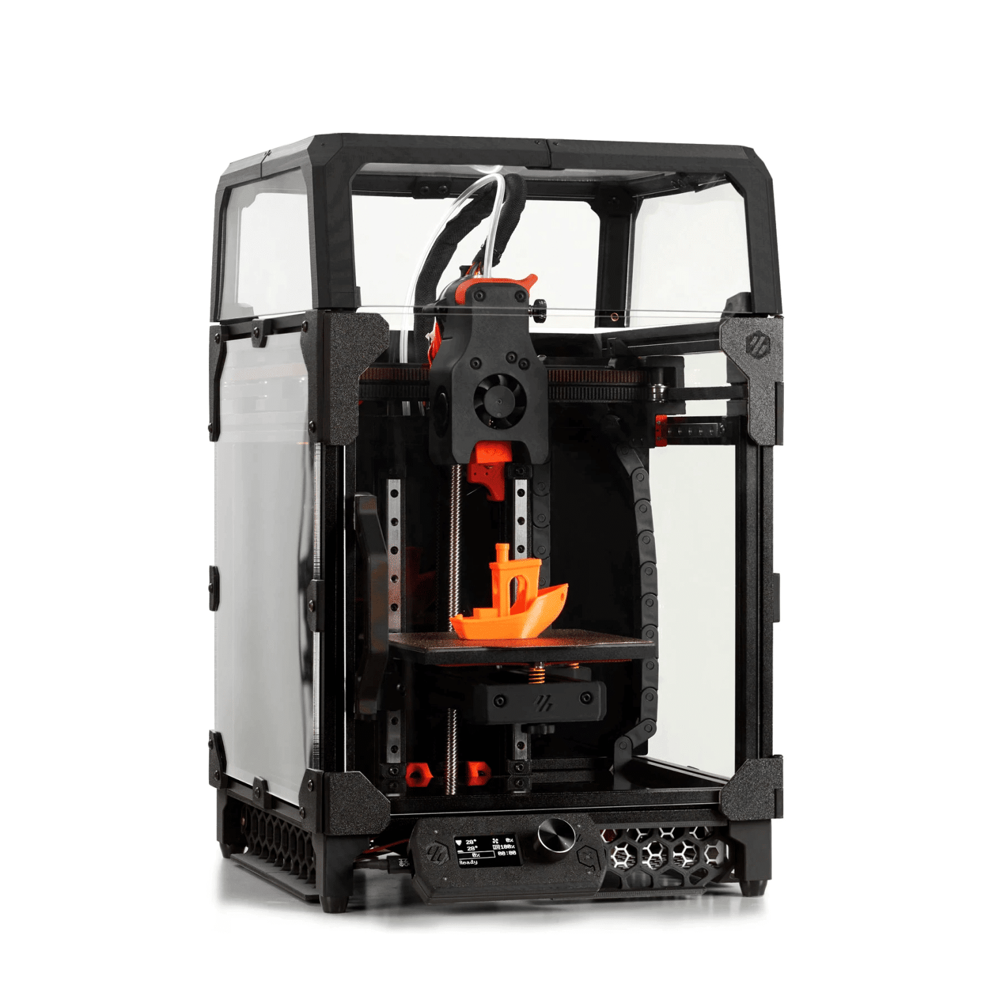

Tools and Experience
I have experience with a variety of maker tools. 3d printers, laser cutters, and cnc machines to name a few. I have experience assembling and troubleshooting 3d printers, and have built a few from kits. I have used laser cutters to make a variety of projects, from simple keychains to mechanical assemblies. I have used CNC machines to machine aluminum to make pins, and I have a basic vacuum casting setup in my garage.
Project Name
My voron 0.1 was my first project that I could use as a tool in the future. It was built over a weekend, and then I modified it further from the original open source design.
Metal Casting
I have a small metal casting setup in my garage, and I have casted aluminum, zinc, brass, and some basic alloys. The crown jewel of the setup is a vacuum casting machine, which I can use to cast intricate designs with high detail.